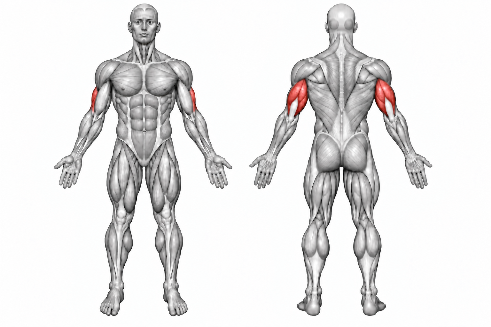
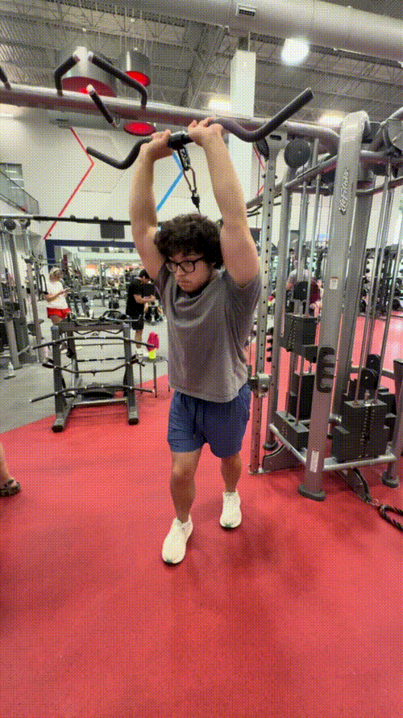

Overhead Tricep Extension


How to Perform
Hold the weight overhead with your elbows pointed forward and your upper arms kept close to your head. Brace your core and keep your torso stable.
Bend your elbows to lower the weight behind your head while keeping your upper arms relatively stationary. Extend your elbows to return the weight to the starting position.
Primary Muscles
Triceps brachii (Triceps)
Secondary Muscles
Anconeus (Triceps)